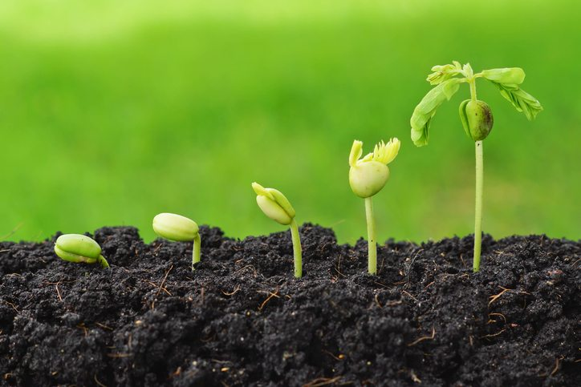
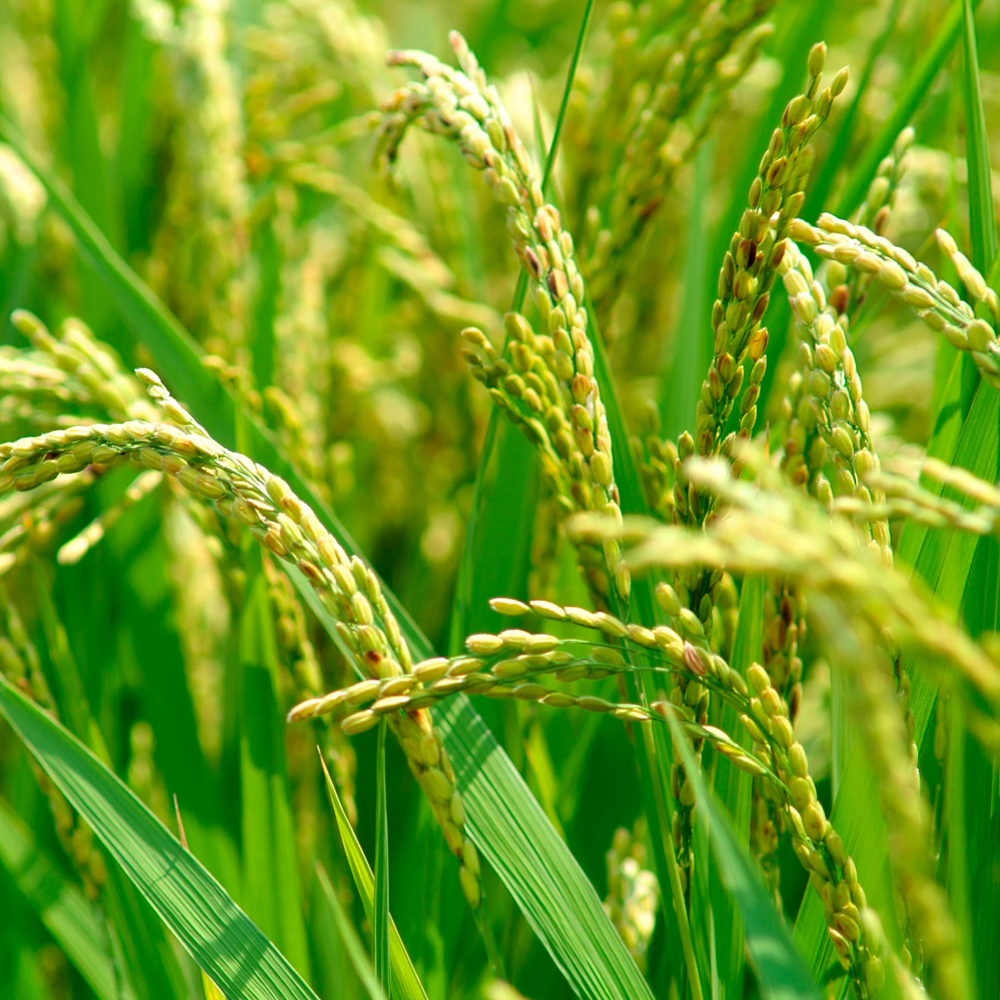
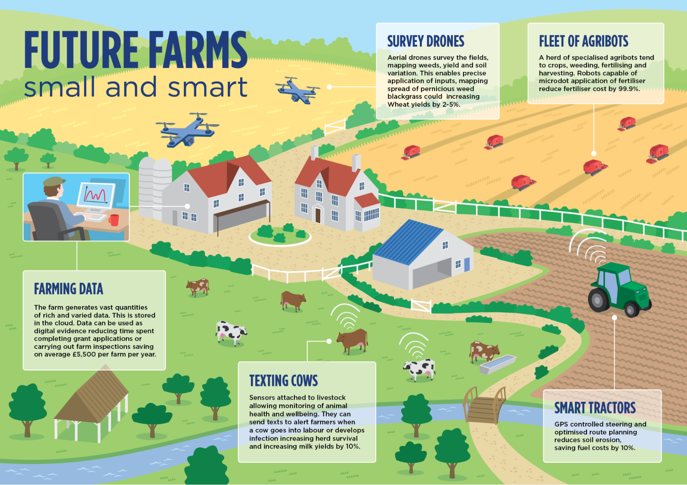

Natural Farming
What Is Agriculture Technology?
- Agricultural technology, also known as “agritech,” encompasses a broad range of disciplines and devices that improve agricultural output. That includes vehicles, robotics, computers, satellites, drones, mobile devices, and software. The use of big data analytics and artificial intelligence (AI) technology in agriculture is also an example of how the farming sector is embracing technological advancement.
- Changes in farming and field management during the past few decades have been revolutionary. The employment of modern, state-of-the-art technology in agriculture can be credited with much of the recent success in crop management and increased harvests.
Benefits Of Technology In Agriculture
- using less water, fertilizer, pesticides, and other inputs allows agricultural producers to cut costs and keep more of their profits;
- by preventing or drastically reducing the amount of chemical runoff into waterways, businesses lessen agriculture’s impact on the environment and take steps toward greater sustainability;
- increasing crop yields while decreasing labor inputs;
- making it easier for farmers, agronomists, or other agricultural workers to communicate and coordinate activities using mobile devices, apps, or web-based resources;
- lowering barriers to accessing agricultural insurance and financial services as well as market and technological data; mitigation of the damage that could be caused by pests, natural calamities, and bad weather in agriculture with the help of affordable, always-on agricultural monitoring systems;
Placeholder
What are the benefits of Natural Farming?
- Decrease in the cost of farming.
- Increase in productivity and profit.
- Can achieve sustainable agricultural development.
- Can preserve the quality of soil, eliminate the toxins of chemical fertilizers and pesticides.
- People will be greatly benefited by the consumption of healthy pure food.
- Longevity of the produce and taste of vegetables, fruits etc will greatly increase.
- Can preserve the quality of surface water and groundwater.
- In the absence of pesticides, the butterflies & bees get more attracted to the flowers, resulting in more pollination and higher production.
- Liquid manures used in natural farming help to make available all nutrients from the soil to the plants and, Micro flora supports improvement in soil fertility.
Placeholder
Our Products & Services
- Whether it's working with rice farmers in Asia, sourcing cotton in Australia, or producing value-added products in Africa, we help our customers around the world meet the increasing demand for food, feed and fibre
- We're dedicated to cultivating a sustainable future where food and agriculture positively contributes to conserving our environment, strengthening communities, and increasing global food security.
- Guided by our Purpose, we transform food, feed, for a more sustainable future. It’s not just what we do, it’s who we are.
- We work together with producers, customers and stakeholders to build enduring partnerships, and conduct our business sustainably to make a positive impact on climate, nature and biodiversity, and enable farming communities to prosper sustainably.
- Together, we are building a brighter future for people, communities and our planet.
Placeholder
Crops We Nourish

Crop Protection
We're the world leader in protecting crops,providing farmers with advancedn and sustainable ways to keep plants healthy form sowing to harvesting.
Call to action
Seed
we're one of the world's largest developer and producers of innovative seed and traits across araing,oilseeds,vegetables,fruts and flowers.
Call to action
People and Culture
At syngenta we strive to become the most trusted and innovative team in agriculture.Here,you'll see the true impact of the work you do.
Call to action